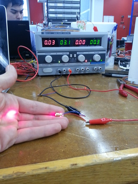

Interface Programming
This week I played with laser diodes. Our lab had a stock of 19566-LZ Mini Laser Head laser diodes from Marlin P. Jones & Assoc. Inc, a part with a one-page datasheet that is mostly pictures, so I began by characterizing its behavior. Hooking the laser diode to a power source, 30mA flowed at 3.1v and the device stayed cool. At 5v 75mA flowed and the diode started getting warm. At 8v 150mA flowed and the diode got too hot to hold in a few seconds; this also seems to have damaged the diode, because its brightness was permanently deteriorated after that. This is not surprising since it's rated for 3-5v; I wouldn't have tried it with an expensive part, but since the diode only costs $2 I indulged my curiosity.
The laser was brightest at 3.6v (40mA). Shining the laser on a white wall from 5 meters away, the laser was first visible at 2.6v, first reasonably bright at 2.8v, and dim by 6v.
The second laser had the same current response as the first but the light intensity peaked at 4.5v. I didn't have a device for measuring light intensity so I can't quantify the response.
50mA at 4v seems like a nice safe region.
I hoped to make a board that could turn on and off a laser that was mounted on a stepper motor, and the board could step the motor to adjust the laser's target. I didn't get as far as the laser, but I got a simple round-trip serial communication between a laser-controlling board and a python app on my computer. I used Tkinter to make the python interface. Simple on/off buttons message the board to control the laser, and each time it receives an off command the board sends back a character that it increments once per send.
Here are pictures of my board, laptop interface, and the full system.
If you're interested in the code, here are the python, c, and make files